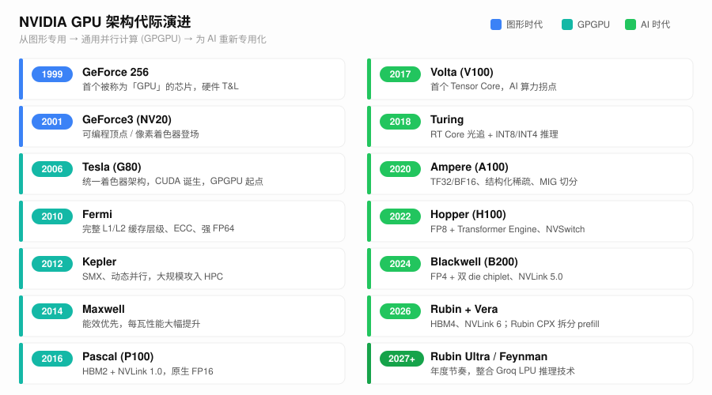
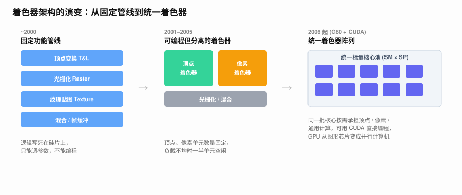
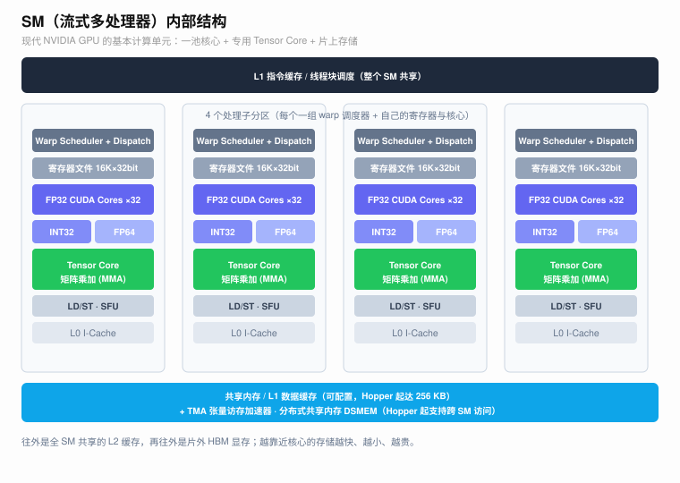
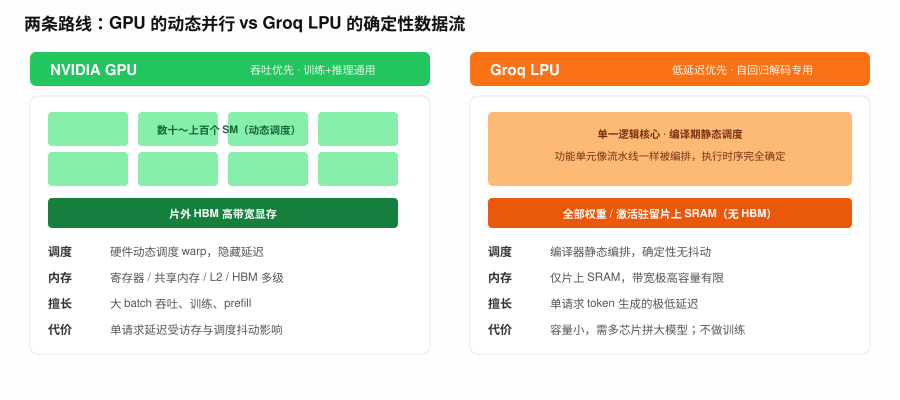
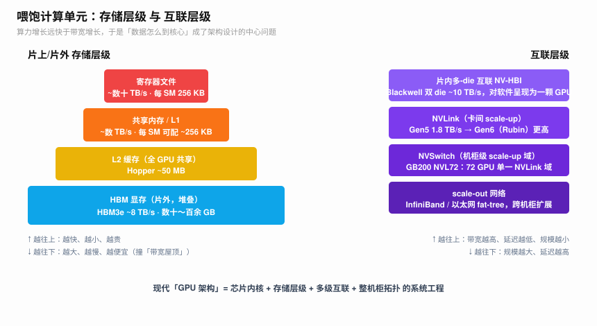

GPU 的历史，本质上是一部「从专用到通用、再为 AI 重新专用化」的螺旋史：它最初只是把三角形画上屏幕的固定电路，中途被改造成一台大规模并行的通用计算机，最后又在大模型推动下，长出 Tensor Core、HBM、NVLink 这些专为矩阵乘与集合通信服务的器官。

一、从 3D 渲染算法说起
要理解 GPU 为什么长成今天的样子，得先知道它最初要解决什么问题：实时三维渲染。把一个三维场景画到二维屏幕上，核心是一条光栅化（rasterization）流水线：
顶点 (3D 坐标)
→ 顶点变换（模型/视图/投影矩阵相乘，MVP）
→ 裁剪 / 透视除法 → 屏幕空间
→ 光栅化（三角形 → 覆盖的像素）
→ 片元着色（纹理采样 + 光照）
→ 深度测试 / 混合 → 帧缓冲这条流水线有两个决定 GPU 命运的特征：天然并行（每个顶点、每个像素彼此独立）与计算密集（大量矩阵-向量乘与插值）。「对海量独立元素做相同计算」这一结构，正是后来 SIMT 执行模型与 GPGPU 的根。关于其中的线性代数，见《线性代数基础》。
二、SGI 时代（1980–1993）
个人电脑还没有 GPU 的年代，高端三维图形属于 SGI（Silicon Graphics）这样的工作站厂商。SGI 用专用图形硬件做好莱坞特效和科学可视化，并定义了影响深远的 OpenGL 图形 API——它把渲染流水线抽象成一组标准化阶段，成了后来所有图形硬件的事实接口。这个时代确立了「流水线式固定功能图形硬件」的范式，但它昂贵、封闭、与通用计算无关。
三、群魔乱舞（1994–2000）
3D 游戏（Quake、Tomb Raider）引爆了消费级三维加速卡市场，一时间厂商林立：3dfx（Voodoo）、ATI、NVIDIA、S3、Matrox、PowerVR……这就是「群魔乱舞」。各家 API 互不兼容（Glide、Direct3D、OpenGL 并存），硬件只做固定功能管线：顶点变换、光栅化、纹理贴图、混合都是写死的专用电路，参数可调但逻辑不可改。
两个标志性节点：
- 3dfx Voodoo（1996）用专用纹理与混合硬件确立了消费级 3D 加速的形态；
- NVIDIA GeForce 256（1999）第一次把几何变换与光照（T&L）从 CPU 搬上芯片，并首次用「GPU」这个词命名自己。
竞争最终收敛到 NVIDIA 与 ATI 两强，3dfx 等被淘汰或收购。这个阶段的关键词仍是吞吐：用大量并行的固定单元批量刷像素，程序员无法干预中间计算。
四、AN 争霸与可编程着色器（2000–2006）
「AN 争霸」指 ATI 与 NVIDIA 的双雄对决。技术主线是可编程着色器（programmable shader）的登场：
- 2001 年 GeForce3（NV20）引入可编程顶点着色器，配合 DirectX 8 的 Shader Model 1.0；
- 随后像素着色器也可编程，DirectX 9 / Shader Model 2.0~3.0 让开发者能往 GPU 里塞自己的小程序，带来可编程光照、后处理等效果。
但此时顶点单元与像素单元是物理分离、数量固定的两组硬件：

一个画面顶点多像素少时，像素单元闲置；反之顶点单元闲置——硬件利用率被负载比例死死卡住。这个「分离导致浪费」的矛盾，直接催生了下一代的统一着色器架构。
五、统一着色器与初代 CUDA：Tesla（2006–2010）
2006 年底的 GeForce 8800（G80，Tesla 架构）是整部历史的转折点，它同时做了两件事：
- 统一着色器阵列：不再区分顶点单元和像素单元，而是一池标量核心（Streaming Processor，SP），由硬件调度器按需分配给任意着色阶段。负载不均的问题被从根上解决——这也是前一节那个矛盾的终点。
- CUDA：NVIDIA 同期推出 CUDA，把这池核心暴露成一个可以用 C 语言编程的通用并行计算设备。
从此 GPU 不再只是图形芯片，而是一台可编程的大规模并行计算机（GPGPU）。这里确立了沿用至今的执行模型 SIMT（Single Instruction, Multiple Threads）：大量线程被组织成 warp（32 线程）同步执行同一条指令，用海量线程的切换来掩盖访存延迟——这正是第一节「对海量独立元素做相同计算」在硬件上的落地。关于 CPU 与 GPU 的生产者-消费者关系，详见《CPU & GPU》。
G80 的 SM（Streaming Multiprocessor）只有 8 个 SP、结构简单；但「SM = 一组核心 + 共享的调度与存储」这个基本单元，一直沿用到今天：

六、通用计算的成熟：Fermi → Pascal（2010–2016）
接下来的四代，是把 GPGPU 从「能跑」打磨到「好用」，重心在存储层级、精度、互联与能效：
Fermi（2010，GF100） 第一次给 GPU 配上完整的缓存层级：每个 SM 有可配置的 64 KB（在共享内存与 L1 之间按 48/16 或 16/48 划分），再加全芯片共享的 L2 和 ECC 保护，并提供可用的 FP64——GPU 正式具备跑科学计算的资格。SM 升级到 32 核、双 warp 调度器。
Kepler（2012，GK110） 推出 SMX（192 CUDA 核/SM），引入动态并行（kernel 内部再启动 kernel）、Hyper-Q（多队列并发）和 GPUDirect RDMA（GPU 显存直连网卡），K20/K40 大规模进入超算与 HPC。
Maxwell（2014，GM2xx） 以能效为核心，重排 SM（SMM，128 核分成 4×32 子分区），每瓦性能大幅提升；代价是砍弱了 FP64。「把 SM 切成 4 个子分区、各带自己的 warp 调度器和寄存器」的结构从此定型。
Pascal（2016，GP100） 是又一个关键节点：首次采用 HBM2 堆叠显存、NVLink 1.0（约 160 GB/s/GPU）高速卡间互联、原生 2× 吞吐的 FP16，并改进统一内存（页迁移）。带宽与互联，而非单纯算力，开始成为瓶颈的主角——为大模型时代埋下伏笔。
七、AI 转折：Tensor Core 三代（2017–2020）
深度学习的核心计算是矩阵乘加（GEMM），传统 CUDA Core 一次只做一个标量乘加，效率不足。2017 年 Volta（V100）引入 Tensor Core——一个每周期完成一整块小矩阵乘加（如 \(D = A \times B + C\)，\(4\times4\) 块）的专用单元。这是 GPU 的第二次「专用化」，但对象从图形换成了 AI。
| 架构 | 年份 | 代表卡 | Tensor Core 代次与关键推进 |
|---|---|---|---|
| Volta | 2017 | V100 | 1 代 Tensor Core（FP16 累加 FP32）；每线程独立 PC 的独立线程调度；L1/共享合并为 128 KB；NVLink 2.0（300 GB/s） |
| Turing | 2018 | T4 / RTX | 2 代 Tensor Core（新增 INT8/INT4 推理）；首个 RT Core 光追；FP32 与 INT32 可并发 |
| Ampere | 2020 | A100 | 3 代 Tensor Core（新增 TF32、BF16、FP64 张量）；结构化稀疏 2:4（2× 吞吐）；MIG 多实例切分；40 MB L2；NVLink 3.0（600 GB/s） |
精度格式的演进是一条清晰副线：FP32 → FP16（Pascal）→ TF32/BF16（Ampere），每一步都用「够用的精度换更高吞吐」。TF32 保留 FP32 的 8 位指数（动态范围不变）但把尾数砍到 10 位；BF16 则是 8 位指数 + 7 位尾数，训练稳定性好。低精度的数值原理见《量化》。
Ampere 的另外两件事对推理工程影响深远：MIG 把一张 A100 切成最多 7 个相互隔离的实例，解决小模型下的资源碎片；结构化稀疏要求每 4 个权重里剪掉 2 个，换取 Tensor Core 2× 吞吐。
八、大模型基座：Hopper（2022）
当模型进入千亿、万亿参数，架构重心从「单芯片算力」转向「如何把一堆芯片拼成一台机器」。Hopper（H100，TSMC 4N，约 800 亿晶体管，132 个 SM） 的几个标志：
- FP8 + Transformer Engine：Tensor Core 升到 4 代，支持 FP8（E4M3 / E5M2 两种格式），配合软件层的 Transformer Engine 自动在 FP8 与更高精度间切换，专门加速 Transformer 的训练与推理；
- HBM3（约 3 TB/s）与 NVLink 4.0（900 GB/s）+ 外置 NVSwitch，把一个域内的多卡连成高带宽整体；
- 线程块集群（Thread Block Cluster）与分布式共享内存（DSMEM）：多个线程块可组成 cluster，直接读写彼此 SM 的共享内存，把协作粒度从单 SM 扩大到一组 SM；
- TMA（Tensor Memory Accelerator）：用专用硬件做大块张量在全局内存与共享内存间的异步搬运，解放 CUDA 核心；
- Grace Hopper：用 NVLink-C2C（约 900 GB/s）把 Grace CPU 与 Hopper GPU 做一致性互联，CPU 内存与 GPU 显存成为统一高带宽地址空间。
到这一代，「GPU 架构」已不只是芯片内部的事，而是芯片 + 封装 + 互联 + 机柜的系统工程。
九、Blackwell：多 die 与「AI 工厂」（2024）
单颗 die 受光罩（reticle）面积限制已到物理极限，Blackwell（B200） 的核心突破是用先进封装拼芯片：两颗 reticle 极限的 die 通过约 10 TB/s 的片间互联（NV-HBI）连成一体，对软件呈现为一颗统一的 CUDA GPU（专辑 #17 专门讨论了多 die 与 Cache 一致性）。其余要点：
- 2 代 Transformer Engine + FP4/FP6：把推理精度进一步压到 4 位，微缩放（micro-scaling）保证精度；
- HBM3e（单卡最高约 192 GB、约 8 TB/s）、NVLink 5.0（1.8 TB/s）；
- 专用解压引擎、RAS 可靠性引擎、机密计算等「数据中心级」特性。
更重要的是系统层：GB200 = 2 颗 Blackwell + 1 颗 Grace CPU；GB200 NVL72 用 NVLink Switch 把 72 颗 GPU + 36 颗 Grace 连成单一 NVLink 域，整机柜像一张大 GPU 一样工作。专辑 #18–#20 把这套东西称为「AI 工厂 / AI 云」，强调它已经是以机柜（rack）为单位交付的系统产品，而不是一块板卡。互联拓扑见《Topology》，通信原语见《Communication》，机柜内 scale-up 与跨机柜 scale-out 的分工是其中关键。
十、ASIC 能取代 GPU 吗
伴随博通（Broadcom）等厂商的定制 ASIC（如各家自研 TPU/加速器）大涨，一个常被问的问题是：专用 ASIC 会不会取代通用 GPU？专辑给出的判断大致是：
- ASIC 的优势在固定负载下的能效与成本——当一个模型结构稳定、规模足够大，为它定制芯片确实更划算；
- GPU 的护城河在通用可编程性 + CUDA 生态 + 快速跟进新算法的能力：大模型结构仍在快速演化（MoE、各种 attention 变体、低精度格式），通用架构能第一时间支持，而 ASIC 的流片周期跟不上。
结论不是「谁取代谁」，而是分层共存：训练与前沿探索留给 GPU，稳定的大规模推理负载会被 ASIC 和专用推理芯片蚕食——这也正是下一节 Groq LPU 的切入点。
十一、Rubin / Rubin CPX / 288 卡系统（2026）
2026 年的 Rubin 配合 Vera CPU（合称 Vera Rubin），进入 NVIDIA 承诺的「一年一代」节奏，升级 HBM4、NVLink 6、ConnectX-9 SuperNIC、Spectrum-6 以太网、BlueField-4 DPU，并继续放大 scale-up 域规模（专辑 #15 推测了约 288 卡级别的系统架构）。
Rubin 最值得注意的是第一次按推理的两个阶段做硬件分工，即 Rubin CPX（专辑 #7）：
- Prefill 阶段是计算密集（compute-bound）、对显存容量/带宽不敏感的；
- Decode 阶段是显存带宽敏感（memory-bound）、算力用不满的。
于是 Rubin CPX 专为 prefill / 超长上下文 设计：堆算力、改用更便宜的 GDDR7 而非 HBM；标准 Rubin GPU 配 HBM4 承担 decode。这正是把《Disaggregation》里 prefill/decode 分离的软件思想，下沉成了异构硬件分工——不同阶段用不同芯片，而不是让一种通用 GPU 两头将就。按公开路线图，其后是 2027 年的 Rubin Ultra 与之后的 Feynman，延续年度节奏。
十二、另一条路线：Groq LPU 与 NV 的整合（专辑 Groq / Feynman 系列）
并非所有人都认同「通用 GPU」这条路。Groq 的 LPU（Language Processing Unit），底层是 TSP（Tensor Streaming Processor），走了一条几乎相反的设计哲学：

- 确定性静态调度：GPU 靠硬件动态调度 warp、靠多级缓存掩盖延迟，代价是单请求延迟有抖动；LPU 把调度完全交给编译器在编译期排好，功能单元像流水线一样被精确编排，执行时序完全确定，没有缓存不命中、没有调度抖动。
- 纯片上 SRAM、无 HBM：权重与激活全部驻留在片上 SRAM（单芯片约数百 MB，带宽极高但容量有限），因此要靠几十上百颗芯片才能拼下一个大模型。
- 只做解码：专攻自回归 token 生成的极低延迟，不做训练，prefill 也不占优。
GPU 优化的是吞吐，LPU 优化的是单请求延迟，两者正好互补。据公开报道，NVIDIA 以约 200 亿美元 规模拿下 Groq 的技术（专辑 #6「被 NV 看上值 20B 的 Groq」、#5「如何整合吸收 Groq 的技术」），并计划把这种确定性低延迟解码能力整合进 Rubin / Feynman（专辑 #3、#4 讨论「Rubin + Groq3 LPU」「Feynman + LPU」的组合架构）。
这其实是 GPU 历史的又一次「专用化」：当年为图形专用、后来为矩阵乘专用，现在要为低延迟解码再专用一次——用一条专用路径补上通用 GPU 在实时自回归生成上的短板。
十三、贯穿始终：存储与互联
贯穿所有代际、却常被忽略的，是存储与互联这条隐形主线。算力增长远快于访存带宽增长，于是「如何喂饱计算单元」反而成了架构设计的中心问题：

- 片内存储层级：寄存器 → 共享内存 / L1 → L2 → HBM，越靠近计算单元越快越小。Fermi 建立缓存层级，Hopper 的 DSMEM 让一个 cluster 内的 SM 能互访彼此的共享内存，本质都是在缩短数据到计算单元的距离。
- 片间 / 卡间互联：从 Blackwell 的片内多-die NV-HBI（约 10 TB/s），到卡间 NVLink（Gen5 1.8 TB/s），到机柜级 NVSwitch（NVL72 单一域），再到跨机柜的 InfiniBand / 以太网 fat-tree，一层层把更多芯片拼成「一台机器」。
一个有用的判断框架是 Roofline：一个 kernel 到底受算力限制还是带宽限制，取决于它的算术强度。架构每一代其实都在同时抬高「算力屋顶」和「带宽屋顶」，而大模型推理的 decode 阶段几乎总是撞在带宽屋顶上——这也是 Rubin CPX 要把 prefill 与 decode 分开用不同芯片的根本原因。详见《Roofline》。
十四、主线规律总结
回看整条历史，有几条反复出现的规律：
- 专用 → 通用 → 再专用的螺旋：固定管线（专用图形）→ 统一着色器 + CUDA（通用计算）→ Tensor Core（专用 AI 矩阵乘）→ Rubin CPX / LPU（专用推理阶段）。每次「再专用」都是因为某类负载大到值得为它定制硅片。
- 瓶颈从算力转向带宽再转向互联：单芯片算力早已过剩，HBM 带宽、NVLink 互联乃至整机柜拓扑，才是近十年真正的战场。
- 精度持续走低：FP32 → FP16 → TF32/BF16 → FP8 → FP4，每一步都用可接受的精度损失换吞吐。
- 架构边界不断外扩：从「芯片内部」扩到「芯片 + 封装 + 互联 + 机柜」，软件层的 prefill/decode 分离甚至开始反向定义硬件分工。
| 时期 | 代表 | 本质 |
|---|---|---|
| 1980–1993 | SGI / OpenGL | 工作站级固定功能图形流水线 |
| 1994–2000 | Voodoo / GeForce 256 | 消费级固定功能 3D 加速，群雄混战 |
| 2000–2006 | GeForce3 / Radeon | 可编程但分离的着色器，AN 争霸 |
| 2006–2010 | G80 / Tesla | 统一着色器 + CUDA，GPGPU 诞生 |
| 2010–2016 | Fermi→Pascal | 通用计算成熟，HBM/NVLink 登场 |
| 2017–2020 | Volta→Ampere | Tensor Core，为 AI 专用化 |
| 2022–2024 | Hopper/Blackwell | FP8/FP4，芯片+封装+互联的系统工程 |
| 2026+ | Rubin/Feynman | 按推理阶段异构分工，整合 Groq LPU |